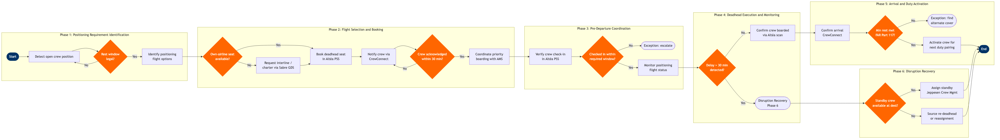

| Step | L4 Step Name | KPI / Target | Pain Point / Risk | Gate |
|---|---|---|---|---|
| 1.1 | Detect Open Crew Position Requiring Deadhead | Position detected within 30 min of trigger event; 95th-percentile detection latency | Late notification from operations control reduces available positioning flight windows, forcing costlier interline or charter options | |
| 1.2 | Calculate Deadhead Eligibility & Rest Window | 100% FAR Part 117 compliance on all deadhead assignments; 0 regulatory violations | Cumulative duty and transport time ambiguity under FAR Part 117 §117.25; manual override risk when schedulers bypass system warnings under pressure | ⚠ |
| 1.3 | Identify Available Positioning Flight Options | ≥3 routing options identified per positioning requirement; identification completed ≤15 min | Limited own-metal frequency on thin or spoke routes forces interline deadheads at significantly higher cost and approval overhead | |
| 2.1 | Check Own-Airline Seat Availability | Own-carrier deadhead utilisation rate ≥85% of all positioning trips | High load factors on peak routes (>90% LF) eliminate deadhead seat inventory; conflicts arise with revenue upgrade requests in the same booking class | ⚠ |
| 2.2 | Request Interline or Charter Positioning | Interline deadhead cost ≤$500 per segment average; charter approval ≤60 min | Absence of interline agreements with ultra-low-cost carriers limits competitive options; charter approvals require multi-level sign-off, slowing time-critical positioning | |
| 2.3 | Book Deadhead Seat & Issue Travel Document | Booking confirmed ≥4 hours before positioning flight departure; 98% booking success rate | Deadhead bookings compete with upgrade inventory management; system priority rules inconsistently applied across stations, causing silent booking failures | |
| 2.4 | Notify Crew of Deadhead Assignment via App | Crew notification issued ≥3 hours before check-in; acknowledgment rate ≥95% within 30 min | Unacknowledged assignments discovered late trigger cascading delays; crew contact reliability degrades during IROPS when app server load peaks | ⚠ |
| 3.1 | Coordinate Priority Boarding with Departure Gate | Deadhead crew boarded before door close 100% of trips; 0 involuntary offloads | Gate agent awareness of deadhead priority inconsistent across stations; crew offloaded during oversale situations without crew scheduling notification | |
| 3.2 | Verify Crew Check-In Within Required Window | Check-in completed ≥90 min before STD (international) or ≥60 min (domestic) — 100% compliance | Self-service kiosks cannot identify crew priority status; manual override at check-in desk required but not always flagged in AMS leading to seat assignment conflicts | ⚠ |
| 4.1 | Monitor Positioning Flight Departure Status | Delay alert generated within 5 min of ATD divergence; monitoring coverage 100% of active deadheads | Real-time flight status integration latency (up to 8 min) causes late crew re-planning; ATC data feed inconsistencies during high-traffic periods create false-negative alerts | ⚠ |
| 4.2 | Confirm Crew Boarded on Positioning Flight | On-board confirmation received ≥15 min before block-out; 100% of tracked deadheads | Boarding scan data not always relayed to crew scheduling in real time; crew off-loaded for weight-and-balance or oversale without crew scheduling notification causes undetected open positions | |
| 5.1 | Confirm Crew Arrival at Destination Station | Arrival confirmed within 15 min of block-in; 100% of active positioning trips | Crew app connectivity issues in remote or international airports; manual phone confirmation fallback increases coordinator workload during multi-disruption IROPS events | |
| 5.2 | Validate Rest Compliance Before Activating Duty | 0 FAR Part 117 violations; 100% FTL compliance audit pass rate; review completed ≤10 min | Ambiguity in counting deadhead transport time against rest requirements under FAR Part 117 §117.25(d); grey-area interpretations vary by base chief pilot, creating inconsistent application | ⚠ |
| 5.3 | Activate Crew for Assigned Duty Pairing | Crew activation completed ≥45 min before STD of first duty leg; 98% on-time activation rate | Late activations (<45 min before STD) trigger minimum connect time violations requiring re-planning; system does not auto-notify gate agents of late crew activation status | |
| 6.1 | Initiate Disruption Recovery for Failed Positioning | Alternative solution identified within 20 min of confirmed disruption; 0 flights cancelled solely due to unresolved crew positioning failure | Standby crew pool depleted during IROPS; simultaneous multi-station disruptions overwhelm scheduling coordinator capacity; re-deadhead approval chains add 30–45 min delay during peak disruption windows | ⚠ |